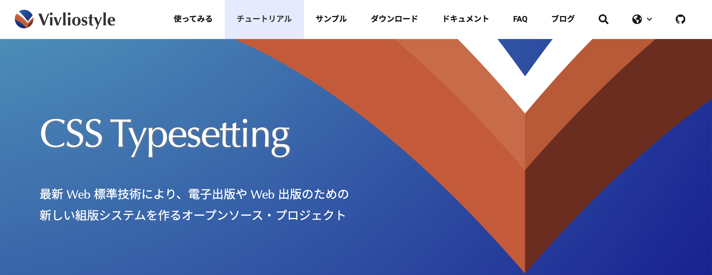

チュートリアルの公開
https://vivliostyle.org/ja/tutorials/
CSS 組版に関する日本語チュートリアルを公開しました🎉

経緯
Vivliostyle 関連ツールのドキュメントが整備されている
一方で、「Vivliostyle 触ってみようかな」の後のハードルが高い
CSS を書いても思い通りの見た目にならない……
○○はどう書けばいい？
そもそも CSS 組版で何ができるかわからない
CSS 組版に関する情報
情報はあるが、点在している
Vivliostyle 公式の資料（例）
Vivliostyle がサポートする CSS 機能
Vivliostyle Core のテストケース
と
そのソース
公式ブログのリリース報告記事
今日の発表者のスライド資料
CSS 組版に関する tips の集約
公式サイトを見れば疑問を解決できるようにしたい
CSS 組版入門ドキュメント
ケースごとのサンプル
etc...